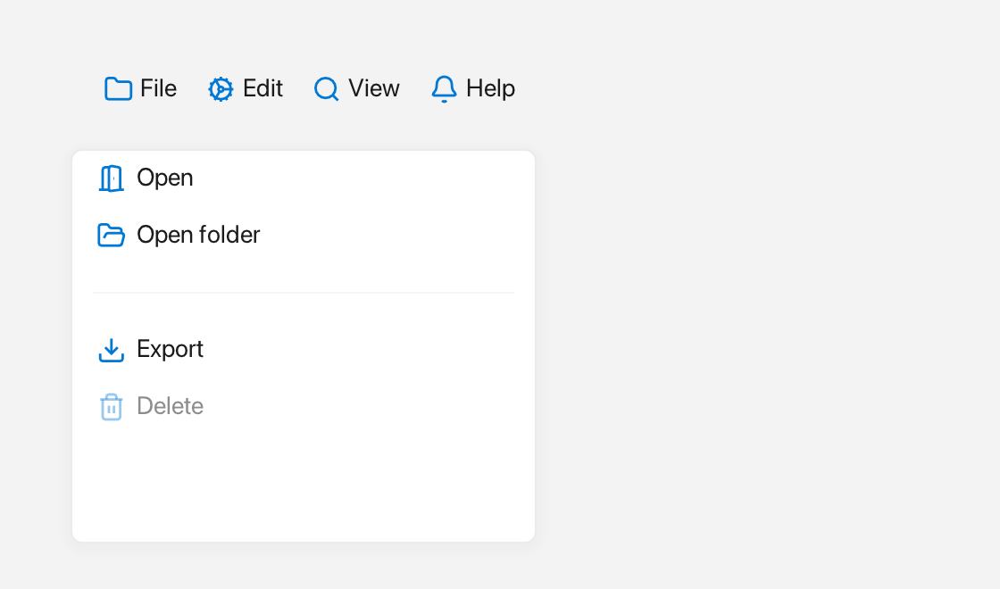

Menu
A Menu is a list of items that can appear as a horizontal menu bar across the
top of a window or as a vertical dropdown list.

A horizontal menu bar and a vertical dropdown.
What it's for
Use a Menu when you want to group actions for the user to pick from. A
horizontal menu bar is the familiar strip of names such as "File" and "Edit"; a
vertical menu is the list that opens below it or next to a button.
Each Menu::Item describes one entry. An item can show an icon, a plain
label or a rich Inline label, and a shortcut. Setting separator draws a
thin dividing line instead of an entry, and a submenu opens another menu to
the side. The on_click callback runs when the user picks the item, and
enabled = false greys it out.
An Inline is rich text built from plain text, an icon from Icons::*, and a
Color.
A first example
A window is the operating-system window your app draws into. Window::open
creates it, and if (!win) stops the program if the window could not be opened.
win.add<T>(...) creates a widget inside that window and returns a
reference to it. Rect{x, y, width, height} places the widget.
#include <memory>
#include <string>
#include <utility>
#include <vector>
#include <fluffy/fluffy.hpp>
int main() {
fluffy::Window win = fluffy::Window::open("Menu demo", 640, 400);
if (!win) return 1;
auto& bar = win.add<fluffy::Menu>(
fluffy::Rect{0, 0, 640, 32}, fluffy::Menu::Orientation::Horizontal);
const std::pair<const char*, std::vector<const char*>> bars[] = {
{"File", {"New", "Open...", "Save"}},
{"Edit", {"Copy", "Paste"}},
{"Help", {"Documentation", "About"}},
};
for (const auto& [title, entries] : bars) {
fluffy::Menu::Item entry;
entry.label = title;
entry.submenu = std::make_unique<fluffy::Menu>(
fluffy::Rect{}, fluffy::Menu::Orientation::Vertical);
for (const char* name : entries) {
fluffy::Menu::Item item;
item.label = name;
entry.submenu->addItem(std::move(item));
}
bar.addItem(std::move(entry));
}
auto& list = win.add<fluffy::Menu>(
fluffy::Rect{16, 64, 240, 160}, fluffy::Menu::Orientation::Vertical);
for (const char* name : {"New", "Open...", "Save", "Delete"}) {
fluffy::Menu::Item item;
item.label = name;
list.addItem(std::move(item));
}
win.run();
}
Menu::Orientation::Horizontal makes a menu bar — each item owns a submenu
that opens when clicked. Vertical stacks the items as a dropdown list. Every
entry is a Menu::Item; here we set only its label, but an item can also
carry an icon, an inlineLabel (rich text that takes precedence over the
plain label), a shortcut, and an on_click callback. addItem adds the
finished item to the menu.
The snippets below assume win and bar from this example.
Common tasks
Add and clear items
fluffy::Menu::Item it;
it.label = "Export as PDF";
bar.addItem(std::move(it));
bar.clearItems();
const auto& items = bar.items();
addItem adds one item at the end and clearItems removes them all. items()
returns the ordered entries as a vector<Item>.
Switch between a bar and a dropdown
bar.setOrientation(fluffy::Menu::Orientation::Vertical);
Horizontal lays the items out as a bar; Vertical stacks them as a dropdown
list.
Open a menu as a popup
auto popup = fluffy::Menu::makePopup(bar.items(), win);
win.showPopup(std::move(popup));
A popup is a floating menu drawn above the rest of the window; it closes when
the user clicks outside it or picks an item. Menu::makePopup builds one from a
menu's items, and win.showPopup takes ownership of it. std::move hands the
popup over to the window.
Handle item clicks
fluffy::Menu::Item it;
it.label = "Export as PDF";
it.on_click = [] { /* run the action */ };
There is no widget-level onChange for a menu. Each item has its own on_click
callback.
Good to know
Menu items are built in code. A Menu: entry in YAML only sets the base widget
properties, so the menu starts empty.
Quick reference
Properties
| Property | Type | Description |
|---|---|---|
orientation |
Horizontal / Vertical |
Layout direction. |
items |
vector<Item> |
Ordered entries. |
Item
Item { icon, label, inlineLabel, shortcut, on_click, enabled, separator, submenu }
icon:Icons::*shown before the label.label/inlineLabel: plain or richInline(rich takes precedence).separator:truedraws a thin line instead of an entry.submenu:unique_ptr<Menu>for cascading.
Methods
auto& bar = win.add<fluffy::Menu>(
fluffy::Rect{0, 0, 640, 32}, fluffy::Menu::Orientation::Horizontal);
fluffy::Menu::Item it;
it.icon = fluffy::Icons::file_text;
it.label = "Export as PDF";
it.inlineLabel = fluffy::Inline{} << fluffy::Icons::star << " Star";
it.on_click = [] { };
it.enabled = true;
bar.addItem(std::move(it));
bar.clearItems();
bar.setOrientation(fluffy::Menu::Orientation::Vertical);
const auto& items = bar.items();
auto popup = fluffy::Menu::makePopup(bar.items(), win);
win.showPopup(std::move(popup));
Events
| Event | Signature | When |
|---|---|---|
on_click |
void() |
Per-Item click (wrapped with closePopupDeferred() in makePopup). |
No widget-level onChange; handle per-item.